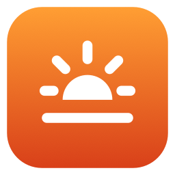

Free preview for Windows
Evening light for Windows, too.
Dozelight for Windows goes warmer than Night Light, down to candlelight and pure red, from a small panel in your taskbar. It's an early preview and free while it lasts.
- A warmth slider from 6500K down to 1000K, plus five presets
- Red Only, with its own brightness
- An on/off switch and Open at Login
- Coming next: Auto mode that follows your bedtime, filters and automatic updates
For Windows 10 and 11, 64-bit. It's a single 108 KB app with nothing else to install. It's brand new, so we'd love to hear how it works on your PC.
Download the preview (ZIP, 70 KB)-
1
Unzip and open Dozelight
Open
Dozelight-Windows-Preview.zipfrom your Downloads folder and moveDozelight.exeto a folder where it can stay, for example Documents. Then double-click it.Open at Login starts Dozelight from that folder, so keep it there.

Dozelight.exeDozelight, version 0.1 preview
-
2
Click More info, then Run anyway
Windows shows a blue Windows protected your PC screen for new apps that aren't signed yet. Click More info, then Run anyway.
You only do this once. After that Dozelight opens normally.
Windows protected your PCMicrosoft Defender SmartScreen prevented an unrecognized app from starting. Running this app might put your PC at risk.
More infoApp:Dozelight.exePublisher:Unknown publisher -
3
Find Dozelight in your taskbar
The Dozelight panel opens by itself the first time. After that, click the sun on the horizon next to the clock to open it.
If you don't see the sun, it's hidden behind the ^ arrow. Drag it from there onto the taskbar so it's always one click away.
↑ Dozelight -
4
Pick your warmth
Drag the slider or choose a preset. Red Only removes all blue and green light, and the slider then sets how bright the red is.
Windows limits how warm apps can make the screen. If Dozelight shows a note about it, click Unlock Warmer Colors and approve it. You may need to restart Windows once.
Dozelight PreviewOnWarmth2000K · 49%
Warm2400K✓ Candlelight2000KFirelight1600K
Red Only (No Blue or Green)
Troubleshooting
The screen doesn't change color
With HDR turned on, Windows ignores color changes from apps. Turn HDR off in Settings → System → Display. If you use Night Light, try turning it off too, so the two don't compete. Remote Desktop and virtual machines usually don't allow color changes either.
It doesn't get as warm as the slider says
That's the Windows limit. Click Unlock Warmer Colors in the Dozelight panel, approve it, and restart Windows if Dozelight asks you to.
Windows Security or my antivirus warns about Dozelight
New apps that aren't signed yet sometimes get flagged. Dozelight only changes your screen's colors and doesn't connect to the internet. If your antivirus blocks it, email us and we'll look into it.
Uninstalling
Open the Dozelight panel, turn off Open at Login, then click Quit Dozelight. Your screen goes back to normal right away. Then delete Dozelight.exe.
Tried it? Tell us how it went at dozelight@icloud.com. Your feedback decides what comes next.
On a Mac? Dozelight is ready there.
Auto mode that follows your bedtime, Red Only, Darkroom and other filters, plus the Touch Bar, pointer and keyboard.
See Dozelight for MacWindows, Night Light and Microsoft Defender are trademarks of Microsoft Corporation. Dozelight is not affiliated with Microsoft.